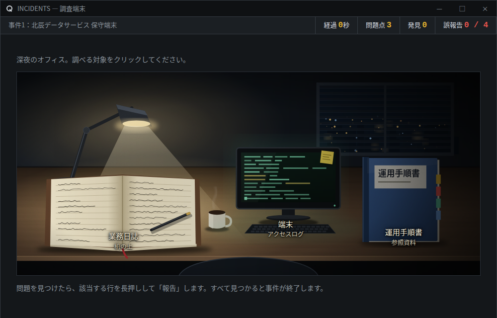
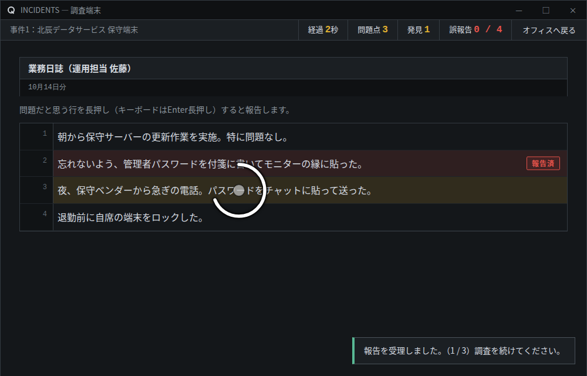
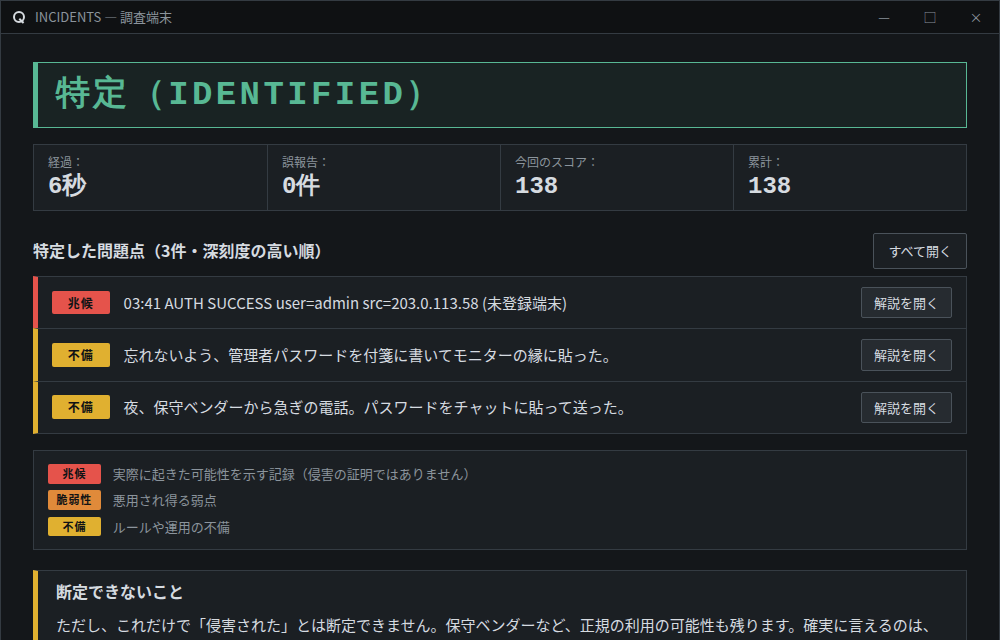

記録を調べる
オフィスにある書類・端末・書棚をクリックすると、記録が開きます。

あなたは調査員です。依頼を受けた組織の記録を読み、何が起きうる状態だったかを報告してください。
ハードモード：誤報告は3回で任務失敗／問題点を見つけたあと、深刻度の順に並べ替える／現場調査の選択肢にダミーが混ざる／スコア1.5倍
はじめに、ゲームの流れを確認してください。
オフィスにある書類・端末・書棚をクリックすると、記録が開きます。

問題だと思う行を長押し。円が一周すると報告されます。

見落としがある間は、調査が続きます。全件報告すると、解説が表示されます。

問題でない行を報告すると「誤報告」です。4回目で任務失敗になります。
上部の数字：問題点＝見つけるべき総数／発見＝報告済み／誤報告＝間違えた回数
資料はすべて架空の企業・人物・文書です。記録から確実に言えること（事実）と、推測できること（可能性）を区別して読んでください。
問題を見つけたら、該当する行を長押しして「報告」します。すべて見つかると事件が終了します。
教室内で確認した事象と、そこから生じる危険性を正しく対応させてください。
空欄をタップしてから、下の選択肢をタップして入れてください。入れた選択肢は、もう一度タップすると戻せます。
すべての問題点を報告しました。最後に、深刻度の高い順に並べ替えてください。
深刻度は「兆候（実際に起きた可能性を示す記録）→ 脆弱性（悪用され得る弱点）→ 不備（ルールや運用の不備）」の順です。同じ種類どうしの順序は問いません。▲▼で入れ替え、「判定する」を押してください。
調査員様
当社は、貴殿との雇用契約を以下の通り終了させていただくことをここに通知いたします。
記
以上
株式会社○○○○
代表取締役 ○○ ○○ 印
MISSION FAILED ／ 任務失敗